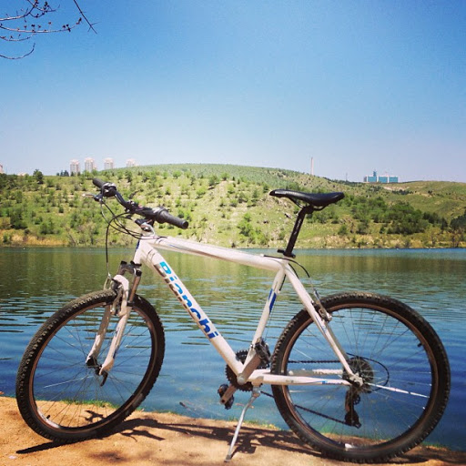

En birincil amacımız sağlıklı bir birey ve toplum oluşturmak, 1920 Yılında Başlamış “Yeşilay Bağımlılıklarla Mücadele” ülküsünü Üniversitemiz bünyesinde devam ettirmektir. Sigara, alkol ve uyuşturucunun bireysel(insan sağlığı), toplumsal(toplum sağlığı) ve ekonomik(uyuşturucunun ekonomik maliyeti vs.) alanlarda etkilerini tespit etmek, Uyuşturucunun genel miras üzerine etkileri, Türkiye’de ve dünyada bu manada mücadele eden kurumlarla işbirliği, Bu konularla ilgili Türkiye ve dünyada kurumlarla ortak projeler, sempozyum, panel, konferans yapmak Alanında uzman olan konuşmacı ve akademisyen tespit edip diyalog kurmak, Proje kapsamında kamplar kurmak. Kamplarda oryantasyon, toplantı ve çalıştaylar yapmak, E-dergi çıkartmak, Arkadaşlarımızı makale yazmaya teşvik etmek, Sigarayı bırakma konusunda teşvik edici projeler hazırlamak, Bağımlı olmuş insanların dram dolu yaşantılarını yerinde görmek ve slayt/videoyla taraflara seyrettirmek veya bir tiyatro ile toplumsal farkındalık oluşturmak, Sigara, alkol veya uyuşturucunun felaketleri konusunda senaryo, öykü, şiir, türkü yarışmaları düzenlemek, Öğrenci kongresi yapmak, Uluslararası faaliyet yapmak. Sağlıklı Yaşamı teşvik etmek; insan hayatının önemini pekiştirici faaliyetler planlamaktır. Yurt içi ve yurt dışında gençleri bilinçlendirecek faaliyetleri inceleyip Üniversitemizin dokusuna uygun çalışmaları okulumuza taşımaktır.

Etkinliğin Tanımı